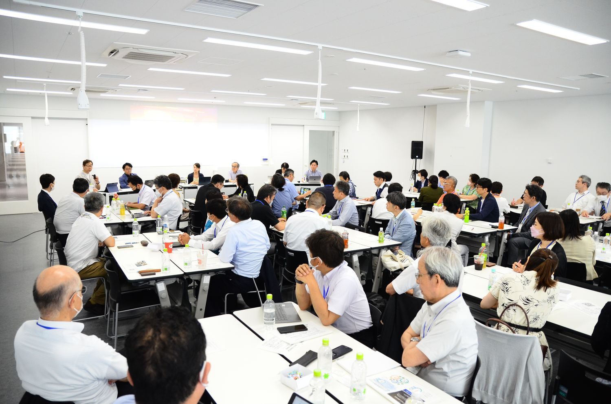
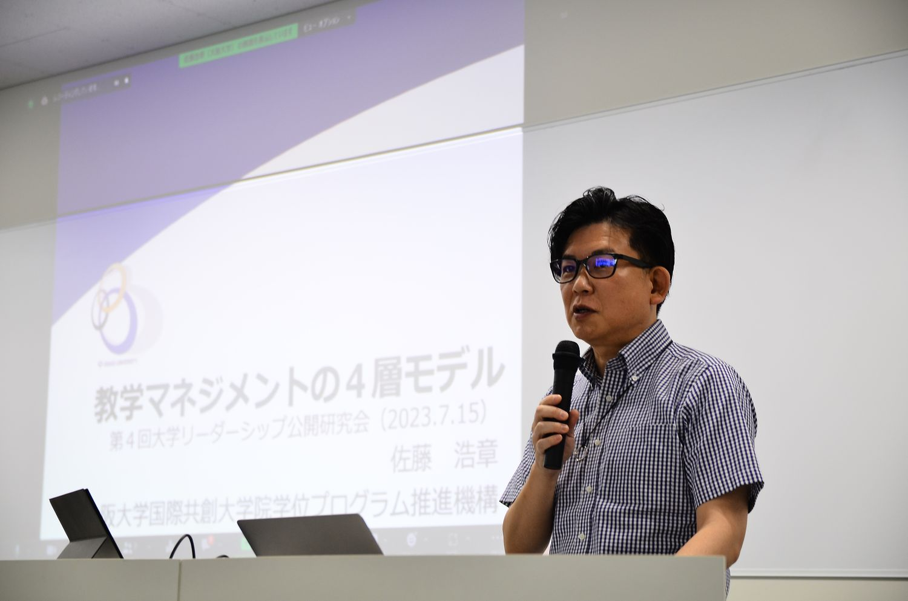
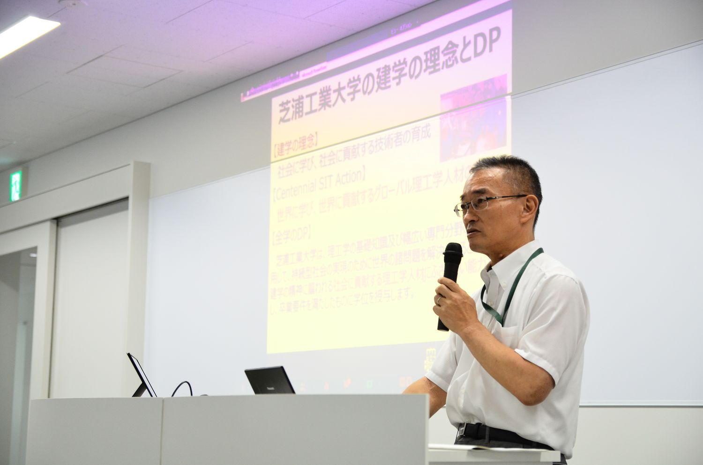
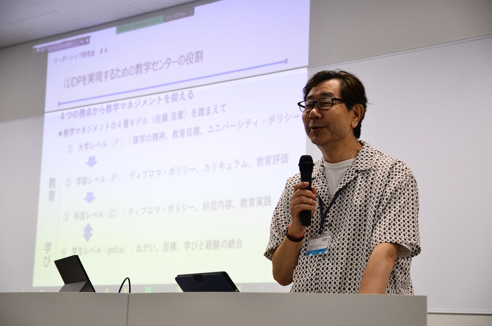
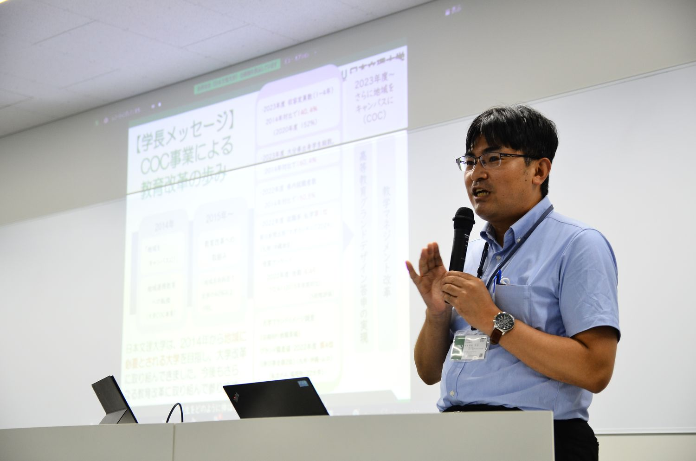
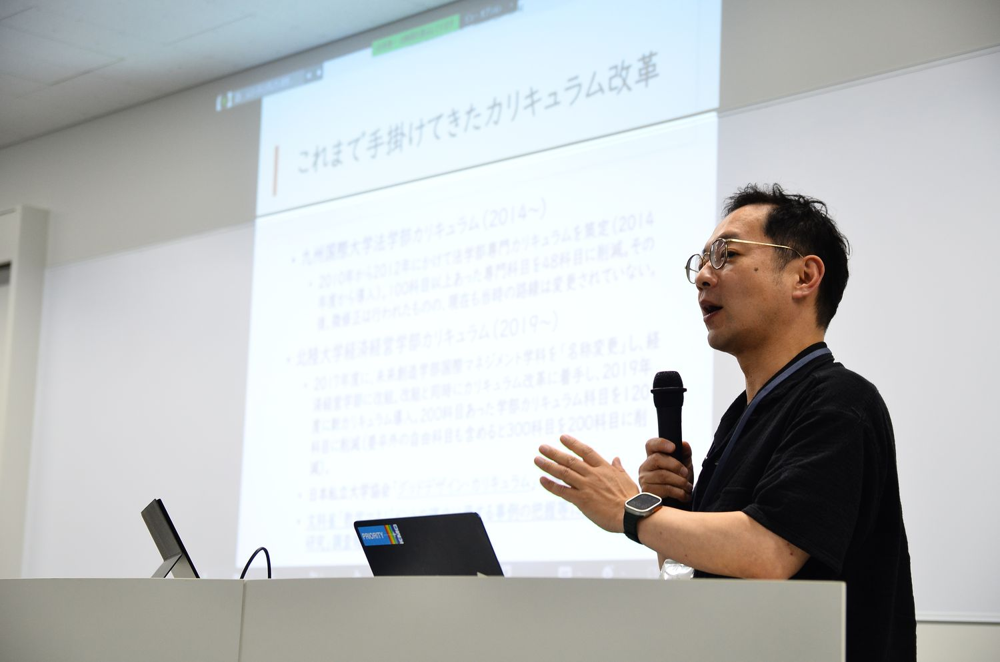
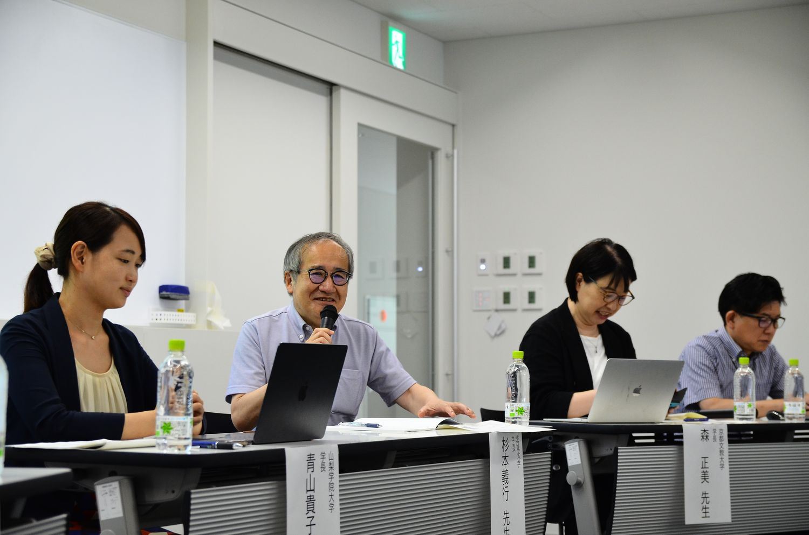
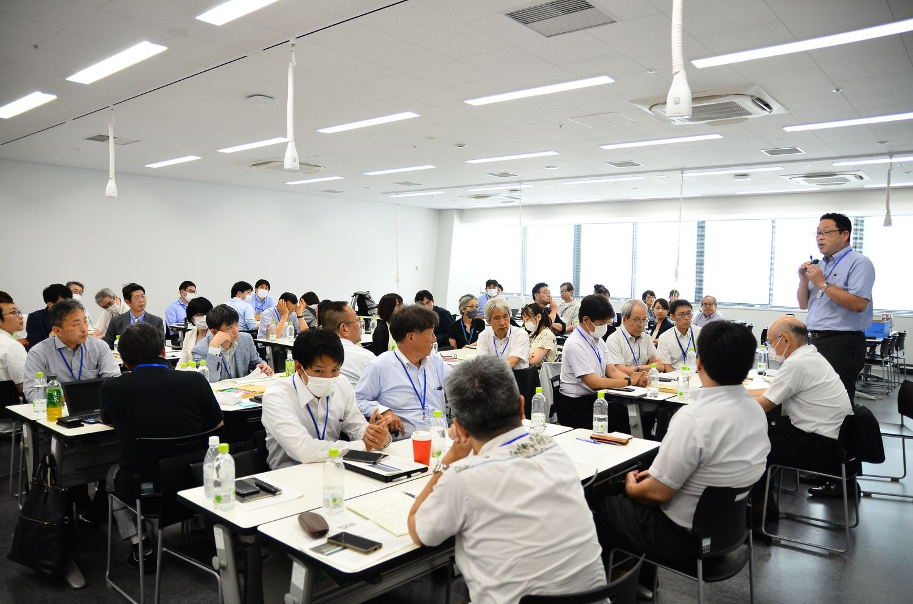

学長のビジョンとミドルの役割教学マネジメントのタテとヨコ
教学マネジメントにおける水平展開（ヨコ）と垂直展開（タテ）をテーマとしました。全学レベル・学位プログラムレベル・授業科目レベルの3レベルが噛み合い、それぞれのレベルでPDCAサイクルを回すことが理想とされますが、現実には制度を形式的に作っても学長のビジョンが現場に浸透しない問題が見受けられます。ミドル教員が担う役割について、全学レベルとの関連性に焦点をあて、参加者とともに解決のヒントを探りました。
MEDIA『教育学術新聞』2023年8月9日付（第2935号 4面）で紹介されました。掲載号の案内（日本私立大学協会）


開催概要
| 日時 | 2023年7月15日（土） 11:00〜15:30 |
|---|---|
| 会場 | 芝浦工業大学 豊洲キャンパス |
| 定員 | 60名 |
| 主催 | 大学リーダーシップ研究会 |
| 共催 | 理工学教育共同利用拠点（芝浦工業大学 教育イノベーション推進センター） |
| 参加者 | 75名（一般参加62名／主催・事務局9名／登壇者4名） |
参加者数は、研究会が保有する第1〜9回の統合参加者データ（v13）にもとづく集計です。申込記録を基礎としているため、当日の実数とは若干の差がありえます。
登壇者とプログラム
- 基調講演大森 昭生共愛学園前橋国際大学 学長「教学マネジメントのタテとヨコ〜ビジョンに向かう（大学）組織はどうしたらできるのか〜」
- 特別講演佐藤 浩章大阪大学 国際共創大学院学位プログラム推進機構 教授「教学マネジメントの4層モデル」
- 事例報告榊原 暢久芝浦工業大学 教育イノベーション推進センター 教授「カリキュラムの整合性整備を進める上での水平展開とミドルマネージャー教員の育成支援」
- 事例報告成田 秀夫山梨学院大学 学習・教育開発センター長「初年次科目でのSAの育成と活用を通して学生の主体的学びを支援する」
- 事例報告吉村 充功日本文理大学 副学長「大学トップのビジョンを学部レベルへつなぐインターフェイスの機能を果たす」
- 事例報告山本 啓一北陸大学 経済経営学部 教授「教員の変化を生み出す初年次教育プログラムの協働開発と実施」
- パネルディスカッション青山 貴子（山梨学院大学 学長）・杉本 義行（成城大学 学長）・森 正美（京都文教大学 学長）・大森 昭生・佐藤 浩章コーディネーター：成田 秀夫（山梨学院大学 学習・教育開発センター長）
開催報告
以下は、当日の発言録をもとに、各登壇者の発言の要旨をまとめたものです。引用部分は発言録からの抜粋です。
開会挨拶と趣旨説明
山本 啓一（北陸大学 経済経営学部 教授）
第4回は芝浦工業大学豊洲校舎で、同大学の理工学教育共同利用拠点との共催で開きました。山本は、文部科学省の教学マネジメント指針の概要図にある全学・学位プログラム・授業科目の三つのレベルを取り上げました。大学のビジョンを授業科目のレベルまで具体化していく方向を「垂直展開」、全学のビジョンを点検・評価などを通じて複数の学位プログラムに広げる方向を「水平展開」と呼びました。そのうえで、学部ごとに進む垂直展開と、学部をつなぐ水平展開の両方をミドルが担っているのではないかと述べ、その難しさを今回のテーマとしました。
多くの大学には複数の学位プログラムがあって、縦展開は学部ごとにやっていくわけですが、それをつないで横展開をしていく動きも必要で、トップのビジョンをもとにこの縦と横の両方のダイナミズムを担っているのがミドルではないか
山本 啓一
基調講演 大森 昭生
共愛学園前橋国際大学 学長「教学マネジメントのタテとヨコ――ビジョンに向かう（大学）組織はどうしたらできるのか」
大森学長は、学修成果を可視化する主体は学生であり、学生自身が理解していなければ可視化にはならないと述べました。共愛学園前橋国際大学では、学生がポートフォリオ「共愛キャリアゲート」に授業の振り返りや活動を記録し、それを根拠に学修成果指標「共愛12の力」をルーブリックで自己評価したうえで、ゼミ教員と面談します。学生一人ひとりまでは学長の手が届かないため、学部長や学科長の役割が大きいといいます。タテは、DPの責任者である学部長が全学のビジョンを学部のDPとすり合わせ、学生まで届ける線です。ヨコは、副学長や、この年に設けた全学教育推進機構が専攻をまたいでつなぐ線です。
後半では、ビジョンに向かう組織をつくるための三つの点を、自らの仕事を振り返って紹介しました。第一は「誰をバスに乗せるか」です。教員採用では模擬授業を必須とし、同僚が大学に合うかどうかを判断します。採用後3年間は任期付きで、その間にビジョンを共有します。第二は「自分ごとにできるか」で、職位や年齢に関わらず多くの教職員が委員長などの小さなミドルの役割を経験します。学部長は選挙で選ばれ、学長の選考委員には20代の職員も選ばれています。第三は「対話のために時間をかけられるか」です。2019年に始めたカリキュラムの議論では月1回の全教員による検討会を重ね、480科目を346科目に減らしました。一方で、少子化のなかで時間をかけていられないという思いもあると述べました。
全学のビジョンを学部ごとのDPとどうすり合わせていくかっていうことが非常に重要になってくるし、各学位プログラムの中には学生さんがいてさっき言ったように学生自身がそのDPを理解して学びに向かっていくようにマネジメントしていかなきゃいけないというこのタテのラインがある。
大森 昭生
一人一人の学部長たちは自分の学部をマネジメントするのでいっぱいいっぱいというかそれが責任ですから、こことここの間をどうつなげるかは副学長なりのミドルの先生の役割になっていくだろうし
大森 昭生
特別講演 佐藤 浩章
大阪大学 国際共創大学院学位プログラム推進機構 教授（当時）「教学マネジメントの4層モデル」

佐藤教授は、かつて教員個人の裁量で変えられる「小道具」とされたシラバスや授業評価が、教学マネジメント指針のもとでは情報公表の対象となり、個人で変えられるものではなくなったと述べました。そのうえで、各項目を組織として合意した目標に向けて相互に関連したシステムとして運用すべきだとし、全体を見渡して要素間のつながりに着目する「システム思考」を求めました。これを具体化したのが、2019年に作成した教学マネジメントの4層モデルです。学習（第1層）、授業（第2層、ミクロ）、カリキュラム（第3層、ミドル）、教育組織（第4層、マクロ）の各層にPDCAがあり、国・地方自治体・市場とのやり取りも含みます。
佐藤教授がPDCAのうち重視したのはチェックの段階です。情報を集めるだけでなく、情報を統合・分析して共有し、そのうえで意思決定することが必要だと述べました。一貫性（アライメント）の構築については、すべてをそろえる必要はなく、筋を通すところとそうでないところを判断することが大切だとしました。学年進行に沿った垂直的な一貫性に加えて、共通教育と専門教育、正課・準正課・正課外のあいだの水平的な一貫性を誰が調整しているのかを問いました。最後に、各層のPDCAを誰がマネジメントし、誰がチェックしているかという視点で自らの組織を分析してみてはどうかと述べました。
学習計画を学生が立てます。教員が授業計画を立てます、学部・学科がディプロマポリシーを立てます。全学組織が中期計画や年度計画を立てます。そこの縦の整合性、垂直的な位置揃えは、誰がやってるんですかっていう話です。
佐藤 浩章
学生さんは共通教育と専門教育を1年生だと一緒に受けたりするけれどもそこの整合性って取れてるんですか。正課活動と準正課活動と正課外活動。これらの横の調整は誰がやってるんですか。
佐藤 浩章
事例報告 榊原 暢久
芝浦工業大学 教育イノベーション推進センター 教授「カリキュラムの整合性整備を進める上での水平展開とミドルマネージャー教員の育成支援」

榊原教授は、FDとカリキュラムマネジメントの統括責任者の立場から報告しました。ミドルの教職員は人事や予算の権限をほとんど持たないため、「風が吹くときを見逃さない」「種をまき続ける」、トップダウンではなく教員に寄り添って進める、の三つを挙げました。芝浦工業大学では、学科のDPを詳細化した「mDP」の設定とWebシラバスの充実を、AP事業の目標に組み込んで進めました。その後、2024年度からの工学部の課程制移行に合わせ、カリキュラム改訂に支援者として加わりました。新しく就いた学部長補佐などに学外研修を受けてもらったことで、各学部の担当者と共通の言葉で話せるようになったといいます。
mDPの設定や、mDPと各科目をつなぐためのWebシラバスの充実、この点はどちらかというとトップダウンで垂直展開の要素が強かったと思います。その後に、実際にカリキュラムの整合性整備を進めていくところは、どちらかといえば水平展開の意味合いが強かったと思います。
榊原 暢久
事例報告 成田 秀夫
山梨学院大学 学習・教育開発センター長「初年次科目でのSAの育成と活用を通して学生の主体的学びを支援する」

成田先生は、山梨学院大学で学部を横断するセンターの立場から報告しました。多くの大学では学部や学科が先にあり、DPは後から定められたため、全学と学部の整合を取るには時間がかかります。学生一人ひとりに個別に対応するには人員も限られています。成田先生は、学生が自らの経験を振り返り、成長を実感する機会を組織として設けることを提案しました。同大学ではセンターと学部の初年次科目にSAが入っており、2年生でSAに応募する学生には、先輩のようになりたいと話す学生が多いといいます。SAは学園祭やオープンキャンパスで活動する学生とも重なっており、成田先生は、こうした学生を自走する学習集団にまとめたいと述べました。
学生が自らの経験と学びに振り返ってその成長を実感する機会を組織的に作っていくというところが非常に肝になっていくんではないかなとは思っています。
成田 秀夫
事例報告 吉村 充功
日本文理大学 副学長「大学トップのビジョンを学部レベルへつなぐインターフェイスの機能を果たす」

吉村先生は、9年間務めた学長室長の経験を報告しました。日本文理大学は「産学一致」を建学の精神とし、15年ほど「人間力の育成」を中心に据えています。2014年に文部科学省のCOC事業に単独で採択され、「地域をキャンパスに」を合言葉に全学のカリキュラムを改めました。学長室は、各学部の副学部長などの教員と職員の長からなる教職協働の組織です。吉村先生は、トップへの提案と現場への説明のあいだで言葉を変えながら調整してきました。学長室は、初年次の体験学習から地域でのPBLまでの仕組みだけを各学科に示し、科目の中身は学科に任せました。中長期計画とCOCの取組は、毎年、学外の理事・監事や自治体・企業が評価しています。
ミドルの私は学長室長副学長の立場で横と縦のところで、いろんな言葉を変換しながらつなぐ役割をやってるかなというところでございます。
吉村 充功
事例報告 山本 啓一
北陸大学 経済経営学部 教授「教員の変化を生み出す初年次教育プログラムの協働開発と実施」

山本は、2つの大学で学部長としてカリキュラム改革を手がけた経験を報告しました。北陸大学経済経営学部では、2019年に自由科目を含めて300科目あった科目を200科目に減らしました。ただし、北陸大学で最初に取り組んだのは初年次ゼミの改革でした。90分の基礎ゼミと45分のキャリア科目を続けて行い、残りの45分で担当教員が集まって振り返りと打ち合わせをします。SAも各クラスで学生がつまずいた点を報告します。毎週顔を合わせるうちに、教員のあいだに問題を一人で抱え込まずに済むという認識が広がり、その関係がカリキュラム改革につながったと述べました。
学部単位のミッションを再定義したうえで、個別の授業レベルでSAを活用したり、先生たちの協働体制を作っていったりすると、関わる先生たちの意識が変わっていく。
山本 啓一
パネルディスカッション
コーディネーター：成田 秀夫／登壇：青山 貴子（山梨学院大学 学長）・杉本 義行（成城大学 学長）・森 正美（京都文教大学 学長）／パネリスト：大森 昭生・佐藤 浩章

はじめに3人の学長が各大学の取組を紹介しました。青山学長は、新しいビジョンをDPに書き込み教育に反映させるために設けた「教学企画室」を紹介し、学部長・センター長連絡会議を、決める会議ではなく検討する会議として運営していると述べました。杉本学長は、成城大学の内部質保証を全学（マクロ）・学部（メソ）・教員（ミクロ）の3層でPDCAを回す仕組みとして説明し、2017年に始めたピアサポート活動では学生が約700人の時間割相談を担ったと紹介しました。森学長は、京都文教大学でこの年4月に学部研究科事務部を設けたことと、学生の代表が各学部のカリキュラムに意見を述べる学生参画カリキュラムアセスメントを紹介しました。
続いて大森学長が、全学DPと学部DPをどうすり合わせているかを尋ねました。青山学長は全学DPを先に定めて学部DPを作り直したと答え、杉本学長は先にあった各学部のDPを包み込む形で全学DPを後から定めたと答えました。森学長は、全学の「KBU学士力」がまだ学生の語れる言葉になっていないと述べました。佐藤教授は、愛媛大学に着任した当初、学生の声を受けて他部署と連携しようとし、所管の範囲を越えないよう求められた経験を語りました。そのうえで、学生を中心に置くと部局どうしもつながりやすいと述べました。佐藤教授が学長の概念図（ポンチ絵）の描き方を尋ねると、大森学長は、学生がどう育つかという物語を描いているつもりだと答えました。
横連携って言いますとその一番下に書いてある学部長センター長連絡会議や各種委員会ですね、ここが「決めるための会議」というよりは、本当の意味でいろいろなことが「検討される会議」になっているということですね。
青山 貴子
ピアサポートとか学生を巻き込むというのはすごく強力なんですよね。学生同士の繋がりもできますし、教職員同士のつながりであったり、もちろん部局同士のつながりみたいなことを進めていく上では学生を中心に置くというのはすごく強いなということを改めて思ったところです。
佐藤 浩章
グループワークと全体共有
進行：山本 啓一

参加者はテーブルごとに、この日の気づき、自大学の課題、今後活かしたいこと、疑問の4点を話し合いました。山本の求めに応じて、3つのテーブルから副学長が報告しました。資格の養成課程ではシラバスが資格中心になりがちで、建学の精神やDPを踏まえて書く必要があるという報告、学長・学部・学生の距離が離れている大学で教員の意識を変える糸口として高大連携を挙げる報告、長く続けてきた教学マネジメントを学修者本位の視点で見直したいという報告がありました。山本は、学生と一緒に取り組む仕組みを使うことの大切さが、この日繰り返し話題になったとまとめました。
ミドル教員が学長のビジョンをどう実現するかっていう時に、現場にあれやってくださいって言うだけじゃ全然動かなくて、学生と一緒にやるとかそういう仕組みをいろいろ使うことが大事なんだなっていう話が繰り返し今日出てきた気がいたします。
山本 啓一
閉会挨拶
吉村 充功（日本文理大学 副学長）
吉村先生は、ミドルに焦点を当てた議論がこれまで少なかったことから本研究会が始まったことを振り返りました。前年7月には学長を中心に、この年2月にはミドルを中心に研究会を開き、今回は両者を組み合わせたと説明しました。学長と現場や学生との距離によって求められるやり方は異なるものの、学生を中心に置き、学生の力を活かすことは各大学に共通していたとまとめました。
学長とかトップと現場の先生方の距離感であるとか、学生との距離感によっても求める答えというかやり方が多様なんだなというのが今日は分かっていただけたのかなと思います。その中でも学生を中心に、もしくは学生の力を活かしながらどうするかっていうところは共通の解かなという思いはありました。
吉村 充功
参加者アンケートから
ディプロマ・ポリシーを起点とした設計と、学生の教学マネジメントへの参画という2点に関心が集まりました。自学で取り入れたい具体策を挙げる記述が多く、仕事との関連性が全回で最も高い4.75となったことと符合します。
| 研究会全体の満足度 | 4.64 | |
|---|---|---|
| 基調講演 大森 昭生 | 4.54 | |
| 特別講演 佐藤 浩章 | 4.29 | |
| 事例報告1 榊原 暢久 | 4.49 | |
| 事例報告2 成田 秀夫 | 4.43 | |
| 事例報告3 吉村 充功 | 4.37 | |
| 事例報告4 山本 啓一 | 4.40 | |
| パネルディスカッション | 4.26 | |
| ワークショップ・質疑応答 | 4.06 | |
| 仕事との関連性・有用性 | 4.75 |
- 教学マネジメントの枠組みは共通でも、その大学にあったやり方で、できるところから build すること、続けていくことが大事なのだと思いました。
- 大学トップ層の考え方を現場に伝えるというミドルの役割の重要性を再確認できた。
- 学生が教学マネジメントに参画する仕組み、特に正課授業への参画が参考になった。
参加者アンケートの回答は36件（回答率48.0%）です。満足度は5段階で、数値が大きいほど高い評価を示します。
資料
- 配布資料参加者向けに共有しています（掲載準備中）
- 発言録参加者向けに共有しています（掲載準備中）
- アンケート結果参加者向けに共有しています（掲載準備中）
本研究会はJSPS科研費 基盤研究(C)「教学マネジメントにおける学部長等のミドルリーダーシップ研究」（研究代表者：山本啓一）の助成を受けて開催しました。